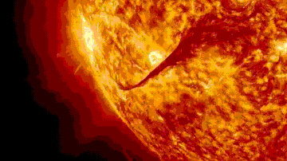
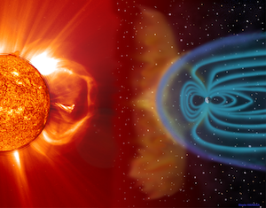

Stellar Dynamics
Stellar Activity
The stellar activity of stars is a measure of how magnetically active a star is. The surface of every star contains several magnetic fields, all interacting with each other. In fact, the sunspots that we see harbor these magnetic fields and connect with each other. Occasionally, these interactions tend to become violent and release massive amounts of energy in what we know as space weather. Types of space weather solar wind, galactic cosmic rays, sunspots, etc.
Solar Flares and Coronal Mass Ejections (CMEs)
Major violent eruptions on stars (types of space weather) can be classified under two major phenomena: solar flares and CMEs. Solar flares are caused by the intertwining of magnetic fields (known as magnetic reconnection) in a star’s chromosphere. These magnetic fields, which can be found visually through the sunspots they create, vary in intensity.
CMEs, on the other hand, have magnetic reconnections in a star’s corona. While CMEs and solar flares often accompany each other, they differ in their fundamental processes. Solar flares are generally smaller than CMEs and are essentially energy-filled flashes of light. CMEs are lightbulb-shaped and emit tons of plasma and energized particles away from the Sun, directly towards Earth.
